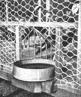

WHEN you start producing food for your family, money will begin to lose its importance. You won't be digging into your pockets every time you turn around. First, you yourself will be producing a good part of your food and secondly, you'll be trading your surplus with your neighbors.
For example, we trade geese for turkeys with one of our neighbors, Tyler Long. Ty and his father have always had a hankering to raise turkeys. For a long time they just talked about it, then a couple of years ago they started in doing it.
Unlike a lot of people, including a few farmers I've met, they were frank with themselves in admitting to begin with that they didn't really know much about turkey raising. They determined to find out all about the newest and best ways of going ahead, start on a small scale. So they talked to any number of commercial turkey men, our county agent, and read everything they could get their hands on about turkeys.
Just to give you an idea of how well they've done, in 1942 the national turkey mortality rate from all causes was reported to be 28%. In 1943, when feed conditions were at their worst in 20 years, Ty kept his mortality rate down to 15%.
While it's true that scientific turkey raising requires certain precautions not always necessary in chicken raising, if a few general principles are followed with care, turkeys can be a surprisingly easy, inexpensive and interesting way of increasing your food supply. Turkeys incidentally, produce more meat per pound of feed than almost any other kind of poultry.
We say this after observing Ty Long's experience raising turkeys. In fact; we have gotten him to give detailed, week by week, instructions, explaining exactly how a family can scientifically raise a dozen or so turkeys.
By no means try to hatch out turkeys from eggs - buy day-old chicks or poults as they are actually called. Place your order early, sometime between December and March. The importance of good breeding in the day-old poults cannot be stressed too much.
Ty recommends buying them from a well-recommended breeder rather than from a hatchery. You can get names from the magazine, Turkey World, (Mount Morris, III., 15c a copy) or consult your county agent. Don't decide on a breeder farther away than 300 miles, preferably closer. Specify shipment by Railway Express.
Most breeders specialize in Broad Breasted Bronzes - they give more meat per pound of frame. This is a good breed to start with, unless you want one of the smaller breeds. If, for your family use, you'd like to wind up with eight or ten fully grown turkeys, you'd best order 15 poults. Poults sell for from $.50 to $.75 apiece. These 15 will probably narrow down to twelve for the cage and eight or ten for your family and friends. You may, of course, do much better than this, in which case you can easily sell your surplus at a nice little profit.
Poor sanitation and dampness, huddling caused by improper heat control, and failure to start eating are the greatest causes of death in young poults. Because a battery brooder provides a maximum of sanitation and dryness, practically eliminates huddling, and its confined quarters are a big help in starting poults eating, we believe a battery is the easiest and safest way to raise your turkeys for the first four weeks. Equally important, a battery brooder reduces labor to a minimum.
Here are Tyler Long's week-by-week instructions. Don't let their seemingly lengthy detail discourage you. It's really easier than it sounds, and, besides, Ty is more of a "perfectionist" than most of us are likely to be.
These instructions are not intended to be absolute. We feel that reasonable appli cation of them plus common sense circumstances not discussed in this short article will result in your successfully raising your turkeys.
From First Day To Fourth Week
At least 2 days before the poults come, completely scrub battery, inside and out, feeders and waterers with hot soapy water. Rinse with hot water. Spray with a warm 4% solution of any reliable coal-tar disinfectant. Only then will your poults be reasonably safe from germs left by the battery's former inmates. Be sure all surfaces are thoroughly dry before the poults come in contact with them. Cover dropping board with newspaper to facilitate daily removal of droppings.
At least 4 hours before poults' arrival regulate temperature under hover (using brooder thermometer or thermostat) to between 95° and 105°. Reduce to 90° the third day. Thereafter a drop of 5° per week is usually advisable. However, behaviour of birds themselves is best barometer of their comfort. Cold poults usually huddle (their most dangerous habit), peep loudly and protestingly. Overheated poults act drugged and listless. Comfortable poults either sleep quietly or peep in a low, contented voice. Above all guard against huddling. More poults die in the first four weeks from smothering caused by huddling than from any other single cause.
On the other hand, it's just as important to remember that over-heating the birds at any stage of the game tends to produce a delicate, over-sensitive turkey. It is usually best for the first two or three nights to wake up at 1 or 2 a.m. to see that turkeys are comfortable. This is a chore, but a necessary one, since as many as 50% of your poults can be killed in one night by huddling.
Before placing your poults in their new quarters, fill the hoppers almost to overflowing with a turkey starter mash from a reputable feed concern. (If the mash is not Vitamin D fortified, add and mix thoroughly 1% Cod Liver oil until the birds are out in the sun.) Sprinkle about one teaspoonful of fine hard chick grit to each three poults on top of the mash, so that they will get their "teeth" with their first meal. Continue giving this grit twice weekly until the tenth week. Fill the waterers with water the temperature of your hand. Continue for two weeks, then change to tap water. Keep both feeders and waterers filled to this level until poults can reach down into them.
Some of your poults may refuse to eat when you first get them. Put down a newspaper and scatter on it some chick scratch. Usually they will peck at this. Next day put chick scratch on top of mash in feeders.
Wash the waterer every day in hot soapy water. Keep it filled with fresh, clean water. Wash feeders every ten days. Stir old feed in with new to prevent any becoming stale.Inspect your poults upon arrival, culling out any malformed, injured, or dying ones. The simplest, most humane method is to snap the neck with a quick, strong twist of the hand. The same treatment should always be accorded any deathly sick or badly injured birds as a protective measure for the rest of your flock. However, like chickens, no disease or injury to which a turkey is susceptible can in any way render the flesh unfit for human consumption. But any birds that are to be eaten should be killed so that they will bleed.
Baby turkeys are subject to a number of diseases, the most prevalent of which are coccidiosis and brooder pneumonia. The former is usually recognizable by bloody droppings and a general washed-out look to the bird. Pneumonia can sometimes be detected by the presence of phlegm in the nasal passage and some shivering. In each case the poult must be segregated from the others, kept warm and dry and fed warm milk, with an eye-dropper, if necessary. Nothing more can be done in the case of brooder pneumonia. The development of coccidiosis is sometimes arrested by administering a 1% solution of Epsom salts. This must be followed in six hours by dried skim milk mixed with the mash or water. Commercial anti-coccidiosis agents are sometimes found helpful. Never return the sick bird to its regular quarters until you are fairly certain a cure has been effected - you must not risk infecting the others. (Lederle's Sulfaguanidine, a new "sulfa" drug, has frequently halted rampages of coccodiosis when other measures failed.
Keep a weather eye out for the condition known as "pasting-up", when the poult's droppings remain stuck to his backside. This is serious, as a poult (or chick) can die very quickly from the poisons caused by a clogged-up intestinal tract. Treatment we found safest: With a medicine dropper apply several drops of inexpensive mineral oil on and around the dropping, which will soon be worked off. Do not try to remove it; the poult's sensitive skin is easily injured.
The advantages of raising turkeys in battery brooders will turn into serious disadvantages if the birds are kept in them after the four week period. Many growers leave poults in batteries only 16 days. The fact that the birds are allowed to develop neither immunity to disease-bearing bacteria nor resistance to less favorable climatic conditions in its protecting confines is responsible for this. Therefore, at least at the start of the fifth week the poults should be moved to a clean, dry, thoroughly disinfected floor covered with at least an inch of good quality shredded litter, preferably sugar cane shavings. The average temperature, at the floor, of their new quarters (section of garage, barn, enclosed porch, small brooder house, etc), should be somewhere between a minimum of 65° and a maximum of 75°. If it is not possible to use the top-section of your battery as their hover (in which case you would remove the dropping board, floor grid, removable sides, feeders and waterer, using it only as a source of heat and shelter on top of the litter), build or buy a small auxiliary hover. (See Chapter on Broilers).
Such a hover, which can be quite simply constructed of insulation board with either 2 or 3 25-watt bulbs or a commercial heating element installed in the roof, must be large enough and adjustable in height so as to accommodate all the birds when they are ten weeks old, at which time they should be more than twice the size they were at four. The temperature should be gradually reduced (if necessary, vary the number and size of the bulbs) so that the birds get little artificial heat for the next to the last two weeks and none whatever during the last two weeks. Important considerations in selecting the poults' new quarters are adequate ventilation facilities and a good supply of sunlight, at times directly on the birds, if possible. Be careful about direct drafts on the birds for the first 3 weeks in new quarters. It would be much to your advantage if you could provide the turkeys with direct access to the air and sun in a small, fine gravel-covered yard or wire-covered cage connected with their new quarters. To accustom the poults to outside temperatures and breezes, be sure to leave all ventilation facilities wide open for the last ten days and nights.
Litter should be thoroughly stirred every other day and completely changed weekly. This is necessary both to combat germs and to keep their walking surface dry, a point of great importance.
It is also important to keep the waterers on three-inch high wire platforms to prevent contamination. Mash should now be fed in a regular chick hopper, water in a one or two quart glass or metal chick waterer. Finely chopped tender green-stuff (lettuce, spinach, orange, cabbage, grass, clover, etc.) can now be fed the poults to great advantage. Scatter moderate amounts each day on top of their mash. Otherwise, feed, grit and water conditions remain as before. (8th week-start to mix growing mash with starter. Gradually increase to all growing, 10th week)
From the sixth week on, a careful watch must be kept for the most dread of all turkey illness, "blackhead." (For identification and treatment of this and other turkey diseases get the Dept. of Agriculture's Bulletin 1652 Diseases and Parasites of Poultry.) Sanitation and segregation of infected birds is your best weapon in fighting both blackhead and coccidiosis. Lederle's Phenothiazine has arrested many epidemics of blackheads, but cannot be guaranteed as a positive cure. If any signs of lice are detected a very light sprinkling of drops of "Black Leaf 40" wherever the birds bed down, be i t litter or roost, will rid them of the torments and dangers of lice.
By the tenth week, under normal conditions, your poults should move to their permanent outside quarters. However, if poor feed or other circumstances prevent normal development or if the weather is unfavorable, it would be best to delay the transfer for a short time. These permanent quarters should consist of a solidly built wire-floored four foot high cage, with its base thirty inches off the ground and supported by pine or fir 4 x 4's whose bases have been dipped in creosote.
If possible, open face of roost enclosure should face south. Sides and top of the cage may be constructed with lath or 2" poultry netting. Great caution should be exercised in eliminating all possible surfaces on the floor where droppings can collect. Bevel 2" x 3"'s (on the top) so that they will just hold staples 18" apart for the 1" by 2" flooring. A door should be placed on any side of the cage not taken up by the feed hoppers. Eliminate all sharp points or surfaces where the turkeys might injure themselves.
By this time a complete change from starting to growing mash should take place. Continue feeding chopped greens whenever possible. The grit, still lightly sprinkled on top of the mash twice weekly, should now be changed to broiler size. Starting with the 12th week broiler scratch, consisting preferably, of cracked corn, oats and wheat, should be fed in approximately one-quarter of the hopper space, boxed off from the rest. By the 20th week this should have been gradually increased to half the hopper space. Also near the 20th week the grit should be changed to full-sized and the scratch, consisting of the same ingredients, to full-size. Gradually increase the percentage of grain to mash until by the 20th week the birds are eating 50% of each. At this time it would make for a better finished turkey if you can make the scratch mixture 70% to 80% corn. It is possible, the last few weeks, to increase the consumption of feed by feeding a moist mash, made by mixing hot water on top of the dry mash in hoppers. However, care should be taken that none of the dry feed becomes sour. Remember the principle of finishing turkeys is to stuff them with as much feed of high caloric value as is possible.
An ailment known as perosis or "slipped tendon" is more prevalent in turkeys from the tenth week on, but it sometimes occurs earlier. Usually hereditary or nutritional in origin, perosis is sometimes introduced through infection. The trouble is easily recognized by the severe lameness and crookedness of one or both of the victim's legs. For treatment see the Farmer's Bulletin of poultry disease, No. 1652.
Your turkeys are ready to kill when they have a fine layer of fat covering the entire body (shown by a white or yellowish appearance of the skin, rather than the purple tint of the muscle tissue) and when at least 95% of the pinfeathers have disappeared. This usually takes from 24 to 28 weeks, but any number of circumstances can delay the finishing. If you want your turkeys to be the best you ever tasted, you'll just have to be patient. A well finished Broad Breasted Bronze tom should weigh a minimum of 18 pounds and often as high as 26 and 28. The hen (whose flesh is not of a quality superior to the tom's) should weigh from 12 to 16 or 17 pounds.
A smaller breed will weigh proportionately less. During starving time, 18 hours before killing, provide plenty of fresh water.
For a turkey slaughterer of amateur standing, decapitation with a sharp axe or machete is quickest, easiest. Immediately after the head has been severed, the bird should be elevated so blood is allowed to drip for about ten minutes. The plucking should take place immediately after the blood has stopped dripping. Again, the simplest method of plucking for amateurs is the semi-scald dip. Using a large vessel similar to a wash tub and a cooking thermometer to assure a temperature about 175°, the entire body of the turkey should be immersed for about 40-50 seconds. The feathers should come out with great ease; if not, dip again. It may be necessary to use gloves or pliers on certain of the wing and tail feathers. After the bird has been completely plucked, it should be hung by feet in a room with a temperature from 30° to 40°, and preferably, a relatively high humidity. If there is any food in the crop, the entire crop should be removed through a neat 3" incision in the front of the neck. Sew this up to prever.t drying out and squeeze the vent to remove any droppings that may be there.
The turkey may be cleaned and roasted at any time after two days of chilling have passed; if the temperature and humidity are correct he may be kept up to -10 days. We recommend that you take your first bird to be cleaned to the butcher in order that you may learn the tricks of the trade directly from him.
In conclusion, here is a digest of the cardinal principles of scientific turkey raising. 1) Sanitation and dryness are your most efficient weapons against disease. 2) Never overcrowd your birds at any stage of their development. Always provide more space rather than less. 3) Never allow your turkeys to come in contact with chickens or any other poultry. Keep them as far from other fowl as possible. If the turkeys are to live in any shelter formerly used by other poultry always thoroughly disinfect those quarters. If there has been any disease there, always fumigate with formaldehyde and potassium permanganate. 4) Always allow adequate space at the feeders and waterers. This means that every bird should be able to eat at the same time and four birds should be able to drink at the same time. 5) Remember that turkeys are but recently descended from their parental wild stock - avoid all unnecessary loud noises, sudden movements and other disquieting influences, since they are much more timid and easily frightened than other poultry. 6) Always slip on rubbers or different shoes when going into the turkey shelter, so as to reduce the possibilities of infection from your chickens. Do not allow any visitors into area where turkeys walk.
Suggested Reading:
"Starting Right With Turkeys" , ($2.75), by G. T. Klein - A top-notch book - many illustrations - complete details.
|
Twelve or thirteen turkeys should have a cage at least 10' by 12' with 12' of feed hoppers running along the outside. Roosts should be built in the sheltered end of the cage, using 2-by-4's with wide side as the roosting surface and allowing 14"" space per bird. Top of roosts should be 20"" from the wire floor and a space of 24"" should separate one roost from another. Allow the birds complete access to the floor under the roosts, otherwise you cut their exercise area to the bone. A slanting roof of very heavy roofing paper and three sides of the same material (removed in above photo) should protect the roosting section. |
 Detail of waterer: pan is protected by a wire guard. Construction prevents birds from contaminating water and enables you to water birds from outside. |
Ty Long feeding his turkeys. He says feeding lime takes only a few minutes when hoppers are conveniently placed outside cage and adequate to hold a week's supply of feed. Good size for hoppers - 8"" deep, 8"" wide, covered by 12"" slanting roof. |